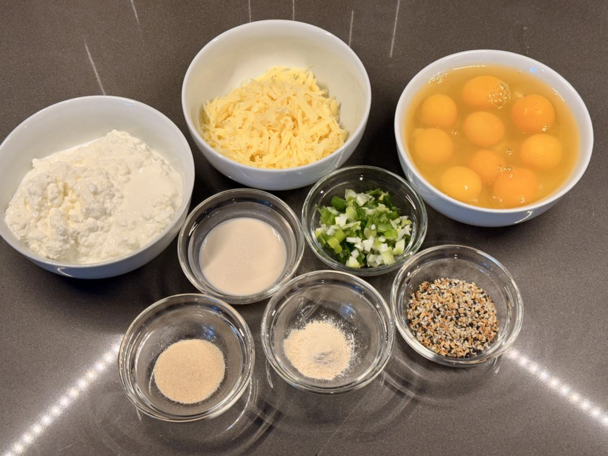
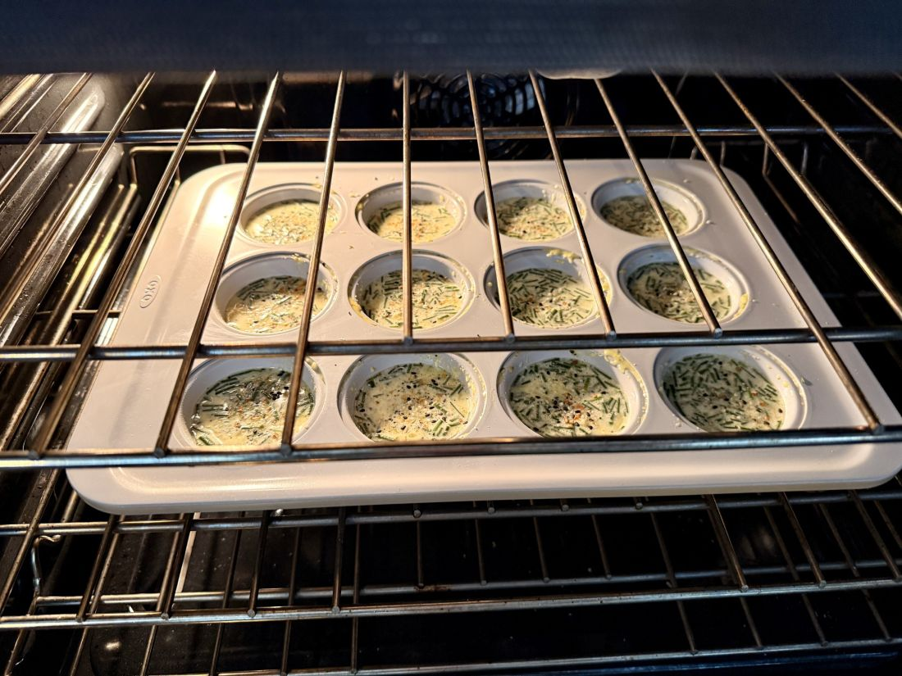
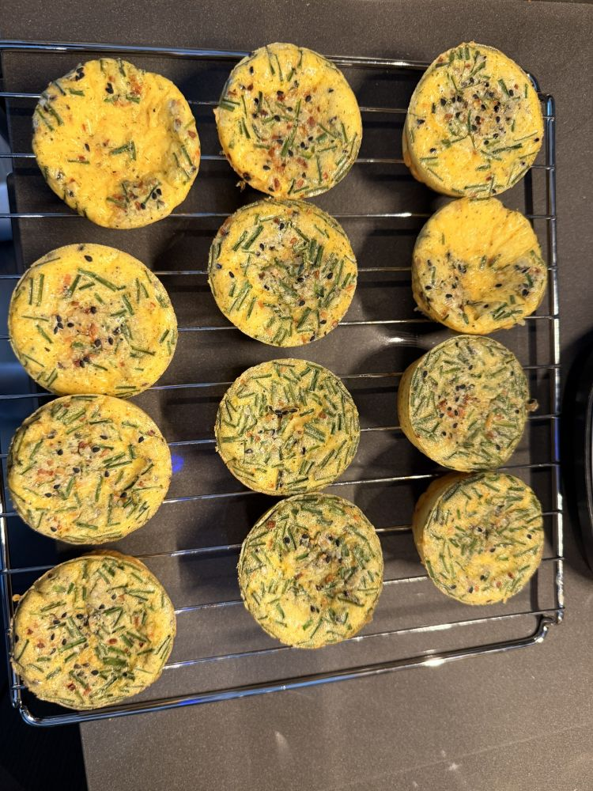

Achieving the perfect egg cup is a lesson in restraint. By eschewing the high-speed blender for the controlled pulse of a food processor, and opting for the richness of full-fat cottage cheese, we find a texture that is light yet stable—a morning anchor that resists the wateriness of lesser methods.
Overview
Every kitchen behaves differently—use your own judgment with ingredients, allergens, and doneness cues.
This recipe was born from a series of "hard-way" lessons. Low-fat cottage cheese and over-aeration are the enemies of the custardy center we seek.
The secret is the cooling ritual. By allowing the cups to rest in the pan before transitioning to a rack, we allow the internal structure to finish setting, preventing the "tearing" and "sogginess" that plague standard egg muffins.
Ingredients
- 9 large eggs (room temperature)
- 1½ cups full-fat cottage cheese
- 1 tbsp oat creamer
- 6 tbsp shredded cheese (mozzarella or sharp cheddar)
- 3 tbsp chives or green onions, finely chopped
- 3 tbsp Everything Bagel seasoning (divided)
- 1½ tsp garlic powder
- 1½ tsp onion powder
- To taste: Fine sea salt and freshly cracked black pepper
Method
1. Prep
- Preheat oven to 325°F (163°C).
- Chop the green onions and or chives. We prefer to grate our own cheese using a box grater.
- Lightly grease a standard muffin tin or prepare a silicone pan (liners are not recommended).
2. The Food Processor Blend

- Add the eggs, cottage cheese, oat creamer, garlic powder, onion powder, salt, and pepper to the food processor.
- Pulse and blend until completely smooth with no visible curds; does not take very long, and in fact, we check it every 10 seconds.
3. The Fold
- Transfer the egg mixture to a bowl. Gently fold in the shredded cheese and chopped chives.
4. Fill and Top
- Pour the mixture into the muffin cups, filling each approximately ¾ full.
- Sprinkle the tops generously with the Everything Bagel seasoning.
5. The Bake

- Bake at 325°F (163°C) for 20–24 minutes.
- The Indicator: You are looking for centers that are just set with a slight jiggle. If they appear "fully firm" in the oven, they are likely overcooked.
6. The Cooling Ritual — Essential!

- Rest in Pan: Let sit for 8–10 minutes in the tin.
- Remove: Run a knife around the edges and lift out carefully.
- Rack Rest: Transfer to a cooling rack for another 5–10 minutes.

Troubleshooting
Spongy or Rubbery: Usually a sign of overbaking or an oven temperature that is too high.
Watery Bottoms: This occurs if you skip the rack rest or if the cottage cheese was not full-fat.